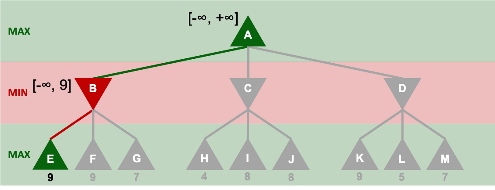
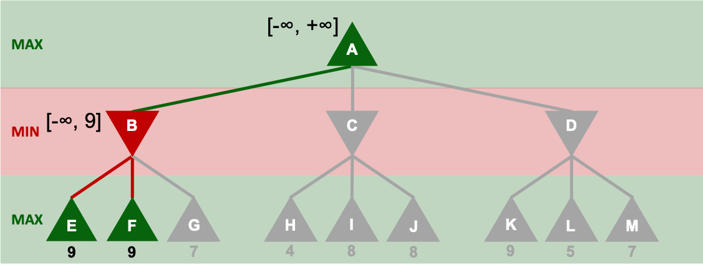
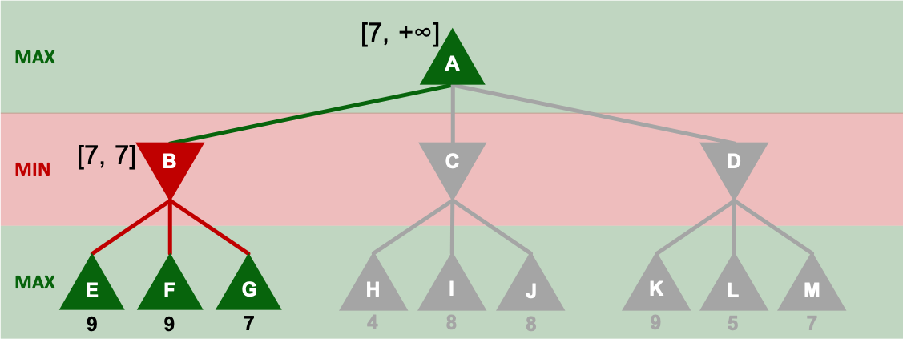
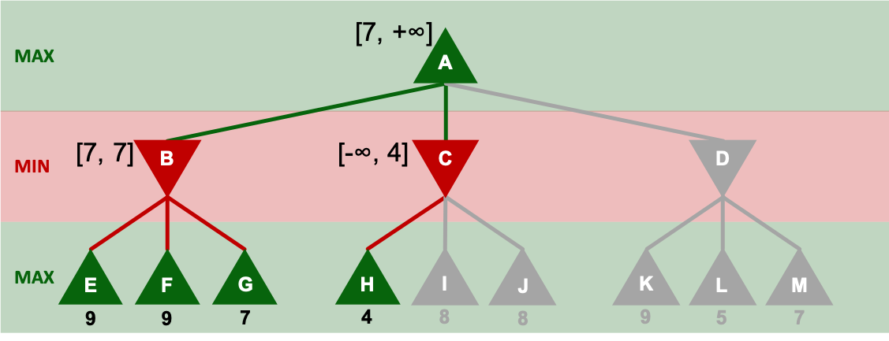
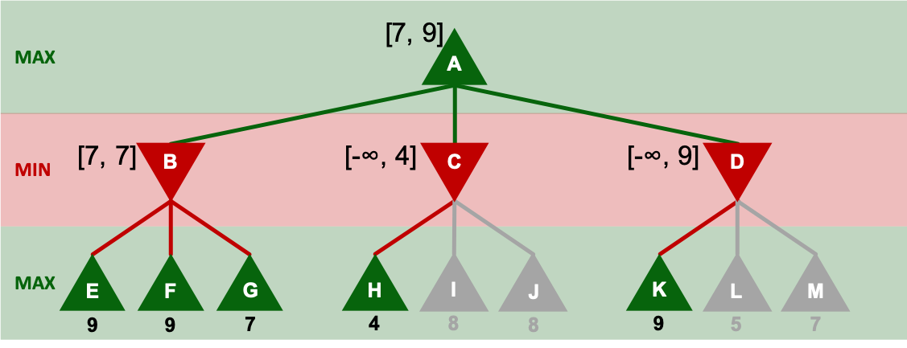
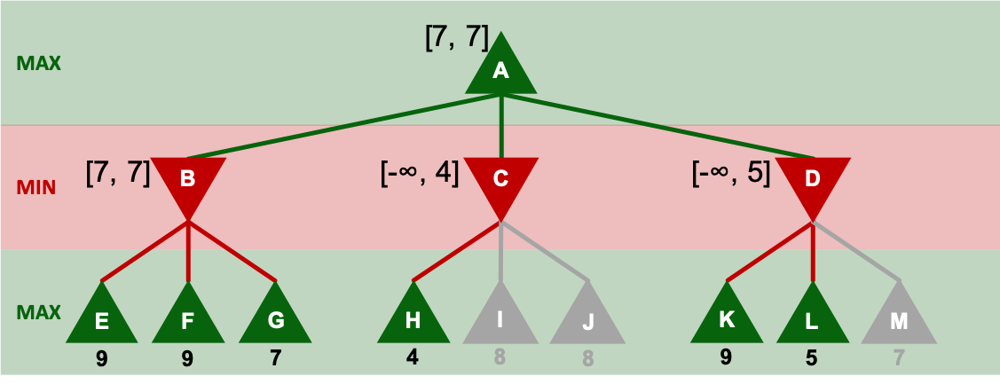

Jeden Tag fällen wir Entscheidungen. Mal mit kleinen Konsequenzen, mal mit
großen Konsequenzen. Mal mit Konsequenzen nur für uns selber, mal mit
Konsequenzen für sehr viele Menschen. Mal denken wir wenig nach dabei, mal
denken wir sehr genau nach. Aber wie können wir die besten Entscheidungen
treffen? Die wirklich beste Entscheidung können wir natürlich nur treffen,
wenn wir alle Konsequenzen kennen und bewerten können. Diesen Zustand nennt
man
Perfect Information. Game Theory versucht alltägliche Situationen auf
abstrakte Spiele abzubilden, um dann diese gut beschreibbaren und
handhabbaren Spiele
genau wie bekannte Spiele wie Schach zu analysieren, und die beste
Entscheidung zu finden. Diese Lehreinheit soll einen Überblick über
Entscheidungsfindung
bei Spielen mit Perfect Information geben, und das Ganze in den Kontext von
künstlicher Intelligenz bringen.
1. Adversarielle Suche
Zero-sum-games
Eine besondere Art von Spielen sind Zero-sum-games.
Dies sind Spiele,
bei denen
die Summe des Ergebnisses am Ende bei jedem Spielausgang konstant ist. Wenn
zum
Beispiel zwei Spieler Alice und Bob Schach spielen, kann entweder Alice
gewinnen, dann kriegt Alice 1 Punkt und Bob 0, oder Bob gewinnt, dann kriegt
Alice 0 Punkte und Bob 1, oder es geht unentschieden aus, dann kriegt sowohl
Alice als auch Bob $\frac{1}{2}$ Punkt. Insgesamt wird also immer genau 1
Punkt
verteilt.
Wenn man sich nun noch vorstellt, dass beide Spieler $\frac{1}{2}$ Punkt als
Einsatz
gezahlt haben und die Einsätze zum Ergebnis addiert, kommt man immer auf 0,
daher der Name Zero-sum-games. Ein etwas intuitiverer Name wäre vielleicht
constant-sum-games.
Minimax
Für ein zwei Spieler Zero-sum-game wollen wir nun einen Algorithmus
entwickeln,
der das Ergebnis berechnet, wenn beide Spieler optimal spielen. Dafür
benötigen
wir eine Datenstruktur, um Spiele darzustellen. Hier bietet sich ein
gerichteter
Baum an. Jeder Knoten repräsentiert dann einen Spielzustand (die Wurzel den
Ausgangszustand) und jede Kante einen legalen Spielzug. Eine Kante $s =
(z_1, z_2)$ stellt also einen Spielzug $s$ dar, der beim Spielzustand $𝑧_1$
legal ist, und nach dem der Spielzustand $𝑧_2$ erreicht wird. Die Blätter
repräsentieren
Endzustände, die das Spiel beenden und haben einen Ergebniswert, der angibt
wie
viele Punkte der erste Spieler an der Reihe bekommt (dieser eine Wert reicht
aus, da durch die Zero-sum-game Bedingung auch die Punktzahl für den anderen
Spieler abgeleitet werden kann). Den ersten Spieler nennen wir deshalb
𝑀𝐴𝑋
(er probiert den Ergebniswert zu maximieren) und den zweiten Spieler nennen
wir
𝑀𝐼𝑁, da er versucht den Ergebniswert zu minimieren. Als Eingabe erhält
unser
Algorithmus also einen solchen Baum und als Ausgabe wird der Ergebniswert
(Punktzahl vom ersten Spieler) produziert. Nach den beiden Spielern 𝑀𝐼𝑁
und
𝑀𝐴𝑋 nennen wir unseren Algorithmus 𝑀𝑖𝑛𝑖𝑚𝑎𝑥.
Der Algorithmus basiert auf einer Tiefensuche.
Für
jeden Knoten,
beginnend
bei
der Wurzel, wird der Ergebniswert basierend auf dem Spieler an der Reihe und
den
Ergebniswerten der Kindknoten basierend auf der folgenden Funktion
berechnet:
$$ minimax(s) =
\begin{cases}
min\{minimax(k) \mid k \in s.Kinder\} & s.Spieler = MIN\\
max\{minimax(k) \mid k \in s.Kinder\} & s.Spieler = MAX\\
\end{cases}$$
Schon an der Definition der Funktion ist zu erkennen, dass dieser
Algorithmus
sehr leicht rekursiv zu implementieren ist. Alternativ kann mit Hilfe der
topologischen Sortierung auch Dynamische Programmierung auf dem Spielgraphen
implementiert werden.
Aufgabe 1
Hast du den Algorithmus verstanden? Stell dir folgendes Spiel vor:
𝑀𝐼𝑁
hat drei
Taschen mit je drei Geldbündeln verschiedener Werte. 𝑀𝐴𝑋 bekommt eins
dieser
Geldbündel von 𝑀𝐼𝑁. Dafür darf 𝑀𝐴𝑋 eine der drei Taschen auswählen
und
dann darf
𝑀𝐼𝑁 aus den drei Geldbündeln aus dieser Tasche auswählen, welches
𝑀𝐴𝑋
bekommt.
Beide Spieler wissen welche Geldbündel in welchen Taschen sind und wie
viel die
verschiedenen Geldbündel wert sind. Logischer Weise möchte 𝑀𝐴𝑋
maximieren wie
viel Geld er bekommt, und 𝑀𝐼𝑁 möchte minimieren wie viel 𝑀𝐴𝑋
bekommt.
Trage im
Spielbaum die 𝑀𝑖𝑛𝑖𝑚𝑎𝑥 Werte von jedem Knoten ein. Die grünen
Felder
stellen Entscheidungen
von 𝑀𝐴𝑋 dar, die roten die von 𝑀𝐼𝑁. Die Blattknoten
stellen
die Werte der Geldbündel dar.
9
9
7
4
8
8
9
5
7
Laufzeit von Minimax
Sowohl mit der rekursiven Implementierung als auch mit dynamischer
Programmierung resultiert eine für die Tiefensuche gewöhnliche Laufzeit in
$𝑂(|𝑉| + |𝐸|)$. Da es in einem gerichteten Baum eine Kante weniger als
Knoten gibt, ist das also eine Laufzeit von $𝑂(|𝑉|)$, also linear zur
Anzahl der Knoten bzw. Spielzustände. Bei einem Spiel mit $𝑟$ Runden und
jeweils $𝑠$ Spielzügen gibt es allerdings $𝑠^r$ Spielzustände und
𝑀𝑖𝑛𝑖𝑚𝑎𝑥 hat dann eine Laufzeit von $𝑂(𝑠^r)$.
Bei kleinen, simplen Spielen mag diese Laufzeit nicht zum Problem werden.
Betrachtet man aber ein komplexeres Spiel wie Schach sieht das anders aus.
Hier
gibt es bei einem durchschnittlichen Spiel ca. 100 Runden mit
durchschnittlich
ca. 35 möglichen Spielzügen. Es gibt also $35^{100} ≈ 10^{154}$ Knoten im
Spielbaum.
Hier kann, wenn dynamische Programmierung verwendet wird, noch ein wenig
optimiert werden, indem gleiche Spielzustände, die über verschiedene
Sequenzen
von Spielzügen erreicht werden können, zusammengefasst werden. Doch selbst
dann
gibt es immer noch ca. $10^{40}$ verschiedene Spielzustände.
Auch mit Optimierung können von einer KI, die zeitbeschränkt den besten Zug
bestimmen soll, nicht alle möglichen Spielzustände evaluiert werden.
Stattdessen
wird der Spielbaum bis zu einer festgelegten Tiefe generiert. Der Nutzen der
so
entstandenen Blattknoten wird dann abgeschätzt. Allerdings leidet darunter
natürlich das Ergebnis, da es sehr schwierig ist, diesen Nutzen
abzuschätzen.
Alpha-Beta-Pruning
Abhilfe schaffen kann da eine weitere
Optimierung: das Alpha-Beta-Pruning.
Dafür schauen wir uns unser Beispiel von Aufgabe 1 nochmals an. Diesmal
wollen
wir allerdings genauer überlegen, was wir über den Wert eines Knotens
wissen,
während seine Kindknoten ausgewertet werden.

Noch nicht betrachtete Teile des Baums sind ausgegraut. Für jeden
Knoten wird
sich gemerkt, wie groß sein Wert maximal und minimal sein kann. Diese
Werte
werden in den Intervallklammern dargestellt. Da Knoten E einen Wert
von
9 hat
und Knoten B ein 𝑀𝐼𝑁-Knoten ist, wissen wir, dass der Wert von B
maximal 9 sein
wird.

Als nächstes wird Knoten F betrachtet. Er hat einen Wert von 9. Das
ändert für
Knoten B nichts, da 9 bereits die obere Grenze ist.

Nun kommt der letzte Kindknoten von B hinzu. Dieser hat einen Wert von
7. Da B
ein 𝑀𝐼𝑁-Knoten ist, wird 7 gegenüber der vorherigen oberen Grenze 9
bevorzugt.
Da außerdem kein weiterer Kindknoten dazukommt, steht die 7 nun auch
als
untere
Grenze für Knoten B fest. Damit ist dann auch die untere Grenze von
Knoten A
klar 7, da A ein 𝑀𝐴𝑋-Knoten ist und keine kleineren Werte als 7
gewählt
werden
würden.

Als nächstes wird H betrachtet. H hat einen Wert von 4, also gilt für
den
darüber liegenden 𝑀𝐼𝑁-Knoten C die obere Grenze von 4. Da A bereits
eine
untere
Grenze von 7 hat, ist C damit unabhängig von I und J für A nicht mehr
interessant. I und J müssen also gar nicht mehr betrachtet werden.
Dies
wird
Pruning genannt.

Nun wird K betrachtet. K hat einen Wert von 9. Also hat der darüber
liegende
𝑀𝐼𝑁-Knoten D 9 als obere Grenze. 9 wäre für A aber interessant, da
9
größer als
7 ist. Also müssen weitere Kinder von D betrachtet werden. Da nun für
alle
Kinder von A eine obere Grenze feststeht, hat auch A nun eine obere
Grenze.

Als nächstes wird also L betrachtet. Damit bekommt D eine obere Grenze
von 5,
ist also wegen der unteren Grenze von A für A nicht mehr relevant. Das
letzte
Kind von D braucht also nicht mehr betrachtet werden. Für A steht nun
der exakte
Wert 7 fest.
Alpha-Beta-Pruning ist also prinzipiell immer noch 𝑀𝑖𝑛𝑖𝑚𝑎𝑥,
allerdings
werden zusätzlich zwei Variablen 𝛼 und 𝛽 verwendet, um die obere und
untere
Grenze für das Ergebnis eines jeden Knotens zu speichern. Dadurch können
uninteressante Teilbäume früher ignoriert werden. In unserem Beispiel
konnten
3
Teilbäume geprunt werden. Das mag auf den ersten Blick nicht gerade viel
erscheinen, aber wenn komplexere Spiele wie Schach betrachtet werden,
können
häufig deutlich mehr Teilbäume mit viele größerer Tiefe geprunt werden und
somit
einiges an der Performance verbessert werden.
Move Ordering
Was auffallen sollte ist, dass die Reihenfolge, in der die Spielzüge
ausgewertet
werden, nun enorm wichtig ist. Denn wenn zum Beispiel Knoten H und I
vertauscht
wären, dann könnte I nicht geprunt werden, weil Schritt 4 Knoten C eine
obere
Grenze von 8 hätte und somit für A noch interessant wäre. Auf der anderen
Seite
wäre eine Vertauschung von K und L sehr wünschenswert, da dann K geprunt
werden
könnte, weil schon in Schritt 5 die obere Grenze von 5 für D feststehen
würde.
Um die Spielzüge effizient in eine gute Reihenfolge zu bringen, werden in
der
Praxis Heuristiken angewendet. Diese sind natürlich sehr vom Spiel
abhängig.
Beim Schach gibt es viele verschiedene Varianten, wie die Spielzüge
vorsortiert
werden können. Wir möchten davon nur eine beispielhaft betrachten. Dabei
werden
zuerst die Züge betrachtet, die eine gegnerische Figur schlagen. Innerhalb
dieser Züge wird nochmal weiter sortiert, nämlich werden zu erste die Züge
betrachtet, bei denen die gegnerische Dame geschlagen wird, dann ein
gegnerischer Turm, ..., und zum Schluss ein gegnerischer Bauer. Als
nächstes
werden dann die Züge betrachtet, die eine gegnerische Figur bedrohen, also
die
Möglichkeit schaffen, im nächsten Zug zu schlagen. Auch hier wird die
gleiche
innere Reihenfolge verwendet. Alle restlichen Züge werden nur noch zuerst
in
vorwärts und dann in rückwärts Bewegungen eingeteilt. Diese einfache
Heuristik
kann die KI schon deutlich verbessern.
Mit einer guten Heuristik, wie dem Beispiel vom Schach, kann die Anzahl
der
Spielzüge die pro Knoten ausgewertet werden müssen von 𝑠 auf ca.
$\sqrt{s}$
verringert werden.
Aufgabe 2
Wie verändert das die Laufzeit und was hat das für eine Auswirkung
auf
die
Schach-KI, wenn weiterhin die gleiche Zeit für die Berechnung des
nächsten Zugs
zur Verfügung steht?
Lösung der Aufgabe 2
Die Laufzeit verändert sich von $O(s^r)$ auf ca.
$O(\sqrt{s}^r) = O(s^{\frac{r}{2}})$.
Der
Exponent kann
also etwa halbiert werden. Dadurch kann die Schach-KI in der gleichen
Zeit den
Baum doppelt so tief generieren und somit deutlich bessere Ergebnisse
liefern,
da die Schätzungen für die Blattknoten deutlich verbessert werden
können.
Im nächsten Abschnitt analysieren wir ein Spiel, bei dem es sich nicht um
ein Zero-sum-game handelt und finden heraus, was hier die beste Strategie
ist.
2. Prisoners Dilemma
Klassische Prisoners Dilemma
Kontext: Zwei Gefangene werden beschuldigt gemeinsam ein Verbrechen
begangen zu haben. Die beiden Gefangenen werden einzeln verhört und
haben
nicht die Möglichkeit miteinander zu kommunizieren. Jeder der beiden
Gefangenen hat nun zwei Möglichkeiten: leugnen oder gestehen.
Rechts befindet sich die Pay-Off-Matrix, die den Nutzen der jeweiligen
Strategie
(leugnen, oder gestehen) enthält. Der Nutzen entspricht den Jahren, die
ein Gefangener im Gefängnis absitzen muss.
B: leugnen
B: gestehen
A:leugnen
A: -1 | B: -1
A: -10 | B: 0
A:gestehen
A: 0 | B: -10
A: -5 | B: -5
Abb: Prisoners Dilemma Pay-Off-Matrix
Aufgabe 3
Wie würdest du handeln? Würdest du leugnen, oder gestehen?
Lösung der Aufgabe 3
Ein rationaler Spieler, genannt Agent, würde gestehen. Um dies zu
erläutern schauen wir uns die
optimale Strategie von Spieler B an. Wenn A gesteht, ist es für Spieler B
besser zu gestehen, da er dann frei kommt, wohingegen er, wenn er leugnen
würde 1 Jahr lang ins Gefängnis müsste. Wenn A leugnet, ist es für Spieler
B ebenfalls besser zu gestehen, weil er dann nur 5 Jahre, anstatt 10 Jahre
ins Gefängnis muss. Da dies eine vollständige Fallunterscheidung ist, ist
es für Spieler B immer besser zu gestehen.
Hier noch ein paar weitere Begriffe:
Eine dominante Strategie ist eine Strategie, die unter allen
möglichen Strategien den höchsten Nutzen
bietet, unabhängig davon, was die anderen Akteure tun. Dementsprechend ist
die dominante Strategie beim Prisoners Dilemma zu gestehen.
Ein Nash-Equilibrium ist eine Kombination aus
Strategien, wobei
jeder Spieler genau eine Strategie wählt, von der aus es für keinen
Spieler sinnvoll ist, von der gewählten Strategie abzuweichen.
Das Nash-Equilibrium besteht beim Prisoners Dilemma in der Kombination aus
Strategien, bei der beide gestehen.
Das Dilemma besteht darin, dass der aufaddierte Nutzen der beiden Spieler
im Nash-Equilibrium (-10) schlechter ist, als wenn beide leugnen (-2).
Alltagsbeispiele
Das Prisoners Dilemma tritt im Alltag in vielen Situationen, fern von
Gefängnissen auf. Schauen wir uns das Beispiel von Werbung an. Stellen wir
uns also zwei Unternehmen vor, die beide gleich gutes Waschmittel verkaufen
möchten.
Wenn beide Unternehmen keine Werbung machen, haben beide Unternehmen keine
Ausgaben für Werbung und wir können davon ausgehen, dass ungefähr 50% der
Kunden
das Waschmittel vom Unternehmen 1 kaufen und 50% das des Unternehmens 2.
Wenn nun genau ein Unternehmen Werbung schaltet, dann können wir uns
vorstellen, dass mehr Leute das Waschmittel dieses Unternehmens kaufen
würden. Wenn beide Unternehmen Werbung schalten, dann haben wir wieder die
selbe Kundenverteilung, wie wenn kein Unternehmen Werbung schaltet.
Die dominante Strategie besteht also darin Werbung zu schalten. Somit
befindet sich das
Nash-Equilibrium darin, dass beide Unternehmen Werbung schalten, wodurch sie
ihre Ausgaben erhöhen, ohne die Einnahmen im Vergleich zu der Situation, wo
beide Unternehmen keine Werbung bezahlen zu steigern.
Weitere Beispiele sind:
Nationen, die Atomwaffen lagern
Athleten, die Drogen zur Leistungsverbesserung nehmen
Prisoners Dilemma mit einer Endlichen Rundenanzahl
Stellen wir uns nun vor, dass beiden Spielern gesagt wird, dass das Spiel
100 mal wiederholt wird. Werden die beiden Spieler nun ihre Strategie
ändern, um kürzer ins Gefängnis gehen zu müssen?
Aufgabe 4
Beweise, dass zwei rationale Agenten
weiterhin in jeder Runde gestehen werden.
Lösung Aufgabe 4
Lösung: Der Beweis funktioniert per Rückwärtsinduktion.
Am 100. Tag hat die Entscheidung der beiden Spieler
keinen Einfluss auf weitere Spielrunden. Ein rationaler Agent würde nun
also
lediglich versuchen den für sich größten Nutzen rauszuziehen, indem er
gesteht. Wir befinden uns schließlich in der selben Situation, wie wenn
das Prisoners Dilemma nur ein Mal gespielt wird, also wie im klassischen
Prisoners Dilemma.
Nun gilt aber für den 99. Tag, dass dieser ebenfalls keine Auswirkung
auf weitere Tage hat, da am 100. Tag schon klar ist, wie wir handeln.
Somit wird jeder Agent auch am 99. Tag optimal für sich handeln, indem
er gesteht.
Das Verfahren setzt sich bis zum 1. Tag fort und wir kommen zu dem
Ergebnis, dass ratinale Spieler immer gestehen würden.
Prisoners Dilemma mit einer "unendlichen" Rundenanzahl
Nun wird den beiden Angeklagten nicht von Anfang an gesagt wie viele
Runden sie spielen werden. Stattdessen wird ihnen gesagt, dass sie nach
jeder Runde mit einer Wahrscheinlichkeit von 99% noch eine weitere Runde
spielen. Der Erwartungswert für die Rundenanzahl liegt somit immer noch bei
100 Runden.
Werden die Spieler nun ihr Verhalten verändern um kürzer ins Gefängnis zu
müssen?
Das kommt darauf an, was man optimieren möchte. Man unterscheidet zwischen
Siegen und Gewinnen.
Beim Siegen geht es einem Spieler darum kürzer als, oder gleich lang wie der
Gegenspieler ins
Gefängnis gehen zu
müssen.
Beim Gewinnen geht es einem Spieler darum möglichst kurz ins Gefängnis zu
müssen.
Nun schauen wir uns ein paar dieser Strategien an:
Sieger-Strategie - "immer gestehen"
Bei der Strategie "immer gestehen" siegt ein Spieler immer gegen den
anderen.
Um das zu beweisen, genügt es sich den Spieler B, also die rechte Spalte
anzuschauen.
Wenn Spieler B gesteht, und A leugnet, muss B kürzer ins Gefängnis und wenn
beide gestehen müssen beide gleich lang ins Gefängnis. Somit muss muss Spieler
B, wenn er immer gesteht insgesamt entweder gleich lang, oder kürzer als
Spieler A ins Gefängnis. Also siegt Spieler B.
B: leugnen
B: gestehen
A:leugnen
A: -1 | B: -1
A: -10 | B: 0
A:gestehen
A: 0 | B: -10
A: -5 | B: -5
Abb: Prisoners Dilemma Pay-Off-Matrix mit farbiger Hervorhebung
des
Nutzens, wenn Spieler B gesteht
Bei dieser Strategie denkt ein Spieler folgendermaßen: "Ich leugne
solange, bis der andere gesteht. Ab dann gestehe ich immer."
Random
leugnen -1
leugnen -1
gestehen 0
gestehen -5
leugnen -10
gestehen -5
Perpetual Punishment
leugnen -1
leugnen -1
leugnen -10
gestehen -5
gestehen 0
gestehen -5
Abb: Veranschaulichung der "Perpetual Punishment" Strategie
Diese Strategie kann sehr gut sein, beispielsweise, wenn beide Spieler
Perpetual Punishment spielen und dementsprechend beide immer leugnen.
Dann liegt der Erwartungswert (wenn mit einer 99%igen Wahrscheinlichkeit
eine
weitere Runde gespielt wird) für jeden Spieler bei:
Wenn Spieler A schon bei der ersten Iteration gesteht, dann liegt der
Erwartungswert für Spieler B, der die "Perpetual Punishment" Strategie
spielt bei:
$$-10 + \sum_{i=1}^\infty (0.99)^i \cdot (-5) = -505$$
Da diese Strategie nur in bestimmten Fällen sehr gute Erwartungswerte hat
und
in anderen Fällen sehr schlechte Erwartungswerte hat, ist sie nur eine
mittelmäßige Gewinnoptimierungs-Strategie.
Gewinnoptimierungs-Strategie - "Tit for Tat"
Getreu der Aussage: "Wie du mir, so ich dir.", leugnet ein Spieler, der mit
der Strategie "Tit for Tat" spielt immer in der
ersten Runde und kopiert in den nächsten Runden immer das Verhalten des
anderen Spielers aus der Runde davor.
Random
leugnen -1
leugnen -1
gestehen 0
gestehen -5
leugnen -10
leugnen -1
Tit for Tat
leugnen -1
leugnen -1
leugnen -10
gestehen -5
gestehen 0
leugnen -1
Abb: Veranschaulichung der "Tit for Tat" Strategie
Die Strategie zeichnet sich dadurch aus, dass Spieler A, der diese
Strategie anwendet:
zuerst die Kooperation mit dem Gegenspieler anbietet, so dass
beide
Aussichten auf 1 Jahr im Gefängnis haben
den anderen "bestraft", der gesteht und damit das Leugnen von
Spieler A
ausnutzt. A "bestraft" den Gegenspieler, indem er in der nächsten
Runde
auch gesteht
sich mit dem anderen Spieler "versöhnen" kann. Denn wenn
Spieler
B wieder leugnet, dann leugnet auch Spieler A wieder und beide haben
wieder Aussichten auf 1 Jahr im Gefängnis
Der einzige Fall mit dem "Tit for Tat" Schwierigkeiten hat tritt auf,
wenn
beispielsweise beide Spieler "Tit for Tat" spielen und eine Störung
auftritt. Beispielsweise gesteht ein Spieler doch, weil die
Polizei ihn so sehr unter Druck gesetzt hat. In diesem Fall entsteht ein
Echo, was sich dadurch auszeichnet, dass Spieler A und B
abwechselnd
leugnen und gestehen. Der Erwartungswert verschlechtert sich dann
drastisch.
Tit for Tat
leugnen -1
leugnen -1
gestehen 0
leugnen -10
gestehen 0
leugnen -10
Tit for Tat
leugnen -1
leugnen -1
leugnen -10
gestehen 0
leugnen -10
gestehen 0
Abb: Veranschaulichung der "Tit for Tat" Strategie bei einer
Störung
3. Nash-Equilibrium bei gemischten Strategien
Zum Abschluss betrachten wir die erneut das wichtige Konzept des
Nash-Equilibriums. Diesmal aber in Verbindung mit gemischten Strategien.
Wir
nennen die verschiedenen Spielzüge, die ein Spieler in jeder Runde zur
Verfügung
hat $s_1, ..., s_n$. Bei einer reinen
Strategie spielt der Spieler
immer den
gleichen
Spielzug.
Eine gemischte Strategie besteht aus einer
Wahrscheinlichkeitsverteilung
über
die $s_i$. Jedem $s_i$ wird also eine Wahrscheinlichkeit $p_i$ so
zugeordnet, dass $\sum_{i=0}^n p_i = 1$ gilt.
In
jeder
Runde wählt der Spieler dann mit den Wahrscheinlichkeiten $p_i$ zufällig
einen der
Spielzüge $s_i$ aus.
Wir erinnern uns, dass eine Nash-Equilibrium dann vorliegt, wenn es
sich für
keinen der Spieler lohnt, seine Strategie zu ändern. Bei gemischten
Strategien
zählt bereits ein Anpassen der Wahrscheinlichkeitsverteilung als Änderung.
Es
lässt sich der folgende Satz zeigen:
Satz von Nash: Erlaubt man gemischte Strategien, so gibt es in
jedem
Zero-sum-game ein Nash-Equilibrium.
Außerdem gilt der folgende Satz:
Satz der gleichen Erwartungswerte: In einem Nash-Equilibrium sind
die
Erwartungswerte für die verschiedenen Spielzüge die ein Spieler in seiner
gemischten Strategie hat gleich.
Beweis: Wir führen den Beweis per Widerspruch. Seien die Strategien
von
Alice
und Bob so, dass sie sich in einem Nash-Equilibrium befinden. Nehmen wir
nun
an,
dass die Erwartungswerte der Spielzüge die Alice in ihrer Strategie hat
nicht
gleich sind. Dann gibt es in der Strategie von Alice zwei Spielzüge $s_1,
s_2$
so,
dass der Erwartungswert für Alice, wenn sie $s_1$ spielt, größer ist als
der
Erwartungswert, wenn sie $s_2$ spielt. Da Alice aber rational spielt,
würde
sie
dann aber statt $s_2$ immer $s_1$ spielen. Sie würde also ihre Strategie
anpassen,
und damit ihren Erwartungswert steigern. Ein Widerspruch zur Annahme, dass
sich
Alice und Bob in einem Nash-Equilibrium befinden. Also kann unsere Annahme
nur
falsch sein. Die Erwartungswerte für die verschiedenen Spielzüge die ein
Spieler
in seiner gemischten Strategie hat müssen also gleich sein. $\blacksquare$
Rock, Paper, Scissors
Betrachten wir nun das allen bekannte Spiel Rock, Paper, Scissors.
Bekanntlich
besiegt Rock Scissors, Scissors Paper und Paper Rock.
$p_{BR}$
$p_{BP}$
$p_{BS}$
B: Rock
B: Paper
B: Scissors
$p_{AR}$
A: Rock
A: 0 | B: 0
A: -1 | B: 1
A: 1 | B: -1
$p_{AP}$
A: Paper
A: 1 | B: -1
A: 0 | B: 0
A: -1 | B: 1
$p_{AS}$
A: Scissors
A: -1 | B: 1
A: 1 | B: -1
A: 0 | B: 0
Abb: Pay-Off Matrix des Spiels Rock, Paper, Scissors
Aufgabe 5
Warum gibt es bei Rock, Paper Scissors kein Nash-Equilibrium aus reinen
Strategien?
Lösung der Aufgabe 5
Jede reine Strategie kann durch eine andere reine Strategie besiegt
werden.
Somit kann bei jeder Kombination aus reinen Strategien einer der Spieler
reagieren um sich zu verbessern.
Nach dem Satz von Nash muss es aber ein Nash-Equilibrium mit gemischten
Strategien geben. Dieses wollen wir nun berechnen. Dafür benennen wir die
Wahrscheinlichkeiten mit denen die beiden Spieler die verschiedenen
Spielzüge
wählen. Beispielsweise steht $p_{AR}$ für die Wahrscheinlichkeit, dass
Spieler A
Rock spielt und $p_{BS}$ dafür, dass Spieler B Scissors
spielt. Um diese Wahrscheinlichkeiten zu berechnen nutzen wir den Satz der
gleichen Erwartungswerte. Demnach gilt nämlich, dass $E_A[Rock]$ (der
Erwartungswert für Spieler A,
wenn er Rock spielt), $E_A[Paper]$ und $E_A[Scissors]$ gleich sind.
Die Erwartungswerte für A können wir leicht mit den Ergebnissen von A und
den
Wahrscheinlichkeiten von B berechnen.
Zusammen mit der Eigenschaft, dass die Wahrscheinlichkeiten $p_{BR},
p_{BP},
p_{BS}$ zusammen $1$ ergeben müssen, ergibt sich das folgende lineare
Gleichungssystem:
Aus diesem Gleichungssystem ergibt sich $p_{BR} = p_{BP} = p_{BS} =
\frac{1}{3}$. Äquivalent ergibt sich aus $E_B[Rock] = E_B[Paper] =
E_B[Scissors]$ für die Wahrscheinlichkeiten von A $p_{AR} = p_{AP} =
p_{AS}
=
\frac{1}{3}$.
Dieses Ergebnis mag wenig überraschend sein, da die Pay-Off-Matrix von
Rock,
Paper, Scissors symmetrisch ist. Interessanter wird das ganze bei einer
asymmetrischen Pay-Off- Matrix.
Matching Pennies
Wir betrachten als weiteres Spiel
Matching
Pennies. Beide Spieler haben eine Münze und können entscheiden, ob sie
Heads
oder Tails spielen (die Münze wird nicht geworfen, sondern jeder Spieler
entscheidet, mit welcher Seite nach oben er die Münze auf den Tisch legt).
Wenn
nun beide Spieler das gleiche spielen, dann gewinnt Spieler A und wenn sie
unterschiedlich spielen, dann gewinnt Spieler B. Die Wahrscheinlichkeiten
für
die einzelnen Spielzüge benennen wir äquivalent zum vorherigen Beispiel
($p_{AH}$
ist die Wahrscheinlichkeit dass Spieler A Heads spielt...).
$p_{BH}$
$p_{BT}$
B: Heads
B: Tails
$p_{AH}$
A: Heads
A: 1 | B: -1
A: -1 | B: 1
$p_{AT}$
A: Tails
A: -1 | B: 1
A: 1 | B: -1
Abb: Pay-Off Matrix des Spiels Matching Pennies
Aufgabe 6
Diese Pay-Off-Matrix ist nun wieder symmetrisch. Was sind die
Wahrscheinlichkeiten für die Strategien, die das Nash-Equilibrium
bilden?
Lösung der Aufgabe 6
Äquivalent zum Rock, Paper, Scissors Beispiel ergibt sich $p_{AH} =
p_{AT}
= p_{BH} = p_{BT} = \frac{1}{2}$
Nun wollen wir aber die Pay-Off-Matrix ein wenig verändern. Spieler A
gewinnt
nun 100 Punkte, wenn er mit (𝐻𝑒𝑎𝑑𝑠, 𝐻𝑒𝑎𝑑𝑠) gewinnt und weiterhin
nur
einen Punkt, wenn er mit (𝑇𝑎𝑖𝑙𝑠, 𝑇𝑎𝑖𝑙𝑠) gewinnt.
$p_{BH}$
$p_{BT}$
B: Heads
B: Tails
$p_{AH}$
A: Heads
A: 100 | B: -100
A: -1 | B: 1
$p_{AT}$
A: Tails
A: -1 | B: 1
A: 1 | B: -1
Abb: Pay-Off Matrix der Abwandlung des Spiels Matching Pennies
Genau wie im Rock, Paper, Scissors Beispiel nutzen wir den Satz der
gleichen
Erwartungswerte:
Zusammen mit der Eigenschaft, dass die Wahrscheinlichkeiten $p_{BH}$ und
$p_{BT}$ zusammen $1$ ergeben müssen, ergibt sich das folgende lineare
Gleichungssystem:
Aus diesem Gleichungssystem ergibt sich $p_{BH} = \frac{2}{103}\approx
1,9\%$
und $p_{BT} = \frac{101}{103}\approx 98,1\%$. Auch hier ergibt sich
äquivalent
aus $E_B[Heads] = E_B[Tails]$ für die Wahrscheinlichkeiten von A $p_{AH} =
\frac{2}{103}\approx 1,9\%$ und $p_{AT} = \frac{101}{103}\approx 98,1\%$.
Aufgabe 7
$p_{AH} ≈ 1,9%$. Warum spielt Spieler A so selten Heads, obwohl er mit
Heads
die
Möglichkeit hat 100 Punkte zu machen und mit Tails nur 1 Punkt gewinnen
kann?
Lösung der Aufgabe 7
Das liegt daran, dass Spieler B natürlich Angst vor den -100 Punkten bei
(𝐻𝑒𝑎𝑑𝑠, 𝐻𝑒𝑎𝑑𝑠) hat und daher sehr häufig Tails spielen wird.
Das
kann
Spieler A dann ausnutzen, indem er auch häufig Tails spielt um dann mit
(𝑇𝑎𝑖𝑙𝑠, 𝑇𝑎𝑖𝑙𝑠) 1 Punkt zu gewinnen. Beide spielen aber immer
mal
wieder trotzdem Heads, damit sich der andere nicht darauf verlassen
kann,
dass
immer Tails gespielt wird.
Was haben wir gelernt?
Bei Perfect Information Zero-sum-games kann eine KI mit unbegrenzter
Zeit dem
einfachen 𝑀𝑖𝑛𝑖𝑚𝑎𝑥 Algorithmus folgen um die optimale Strategie zu
spielen.
Sobald die KI zeitbeschränkt ist, oder das Spiel so komplex wird, dass
ein
komplettes Generieren des Spielbaums nicht mehr praktikabel ist, kann
der
Baum
mit Hilfe von Alpha-Beta-Pruning und einer guten
Move-Ordering-Heuristik
doppelt
so tief generiert werden wie ohne.
Das Nash-Equilibrium besteht beim klassischen Prisoners Dilemma, aus der
Kombination (gestehen, gestehen). Durch eine undefinierte
Anzahl an
Wiederholungen des Spiels kann es für Spieler trotzdem sinnvoll sein zu
leugnen
um ihren Gewinn zu optimieren.
Erlaubt man gemischte Strategien, so gibt es in jedem Zero-sum-game ein
Nash-Equilibrium.
Literatur
Artificial Intelligence, A Modern Approach, Third Edition - Stuart
Russel,
Peter Norvig
Introducing Game Theory: A Graphic Guide - Ivan Pastine, Tuvana Pastine,
Tom
Humberstone
The Joy Of Game Theory: An Introduction To Strategic Thinking - Presh
Talwalker